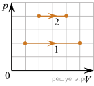
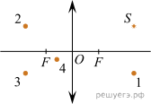

На рисунке показан график зависимости проекции υx скорости тела от времени t. Какова проекция ax ускорения этого тела в интервале времени от 8 до 10c? Ответ запишите в метрах на секунду в квадрате.
Ответ:
Задание 2
На графике приведена зависимость ускорения бруска, скользящего без трения от горизонтальной силы. Систему отсчета считать инерциальной. Чему равна масса бруска? Ответ запишите в килограммах.
Ответ:
Задание 3
Тело массой 600г, брошенное вертикально вверх с поверхности Земли, поднялось на максимальную высоту, равную 8м. Какой кинетической энергией обладало тело в момент броска? Сопротивлением воздуха пренебречь. Ответ запишите в джоулях.
Ответ:
Задание 4
Коромысло весов, к которому подвешены на нитях два груза (см.рис.), находится в равновесии. Массу первого груза увеличили в 2 раза. Во сколько раз нужно уменьшить плечо d1, чтобы равновесие сохранилось? (Коромысло и нити считать невесомыми.)
Ответ:
Задание 5
Математический маятник с частотой свободных колебаний 0,5Гц отклонили на небольшой угол от положения равновесия в положение 1 и отпустили из состояния покоя (см.рис.). Сопротивлением воздуха пренебречь. Потенциальная энергия маятника отсчитывается от положения равновесия. Из приведённого ниже списка выберите все верные утверждения, описывающие процесс колебания маятника.
1) Потенциальная энергия маятника в первый раз достигнет своего максимума через 2с после начала движения. 2) Через 0,5с маятник первый раз вернётся в положение 1. 3) При движении из положения 2в положение 3 полная механическая энергия маятника остается неизменной. 4) Кинетическая энергия маятника в первый раз достигнет своего максимума через 0,5с после начала движения. 5) При движении из положения 3в положение 2 модуль силы натяжения нити уменьшается.
Ответ:
Задание 6
Космический исследовательский зонд обращается по круговой орбите вокруг Марса. В результате перехода на другую круговую орбиту центростремительное ускорение зонда увеличилось. Как изменились при этом переходе скорость зонда и период обращения зонда вокруг Марса? Для каждой величины определите соответствующий характер изменения:
1) увеличилась 2) уменьшилась 3) не изменилась
Запишите в таблицу выбранные цифры для каждой физической величины. Цифры в ответе могут повторяться.
Ответ:
Задание 7
Концентрация молекул разреженного газа в сосуде была увеличена вдвое, а абсолютная температура газа— уменьшена в 4 раза. Во сколько раз при этом уменьшилось давление газа?
Ответ:
Задание 8
Газ получил количество теплоты, равное 300Дж, при этом внутренняя энергия газа уменьшилась на 100Дж. Масса газа не менялась. Какую работу совершил газ в этом процессе? Ответ запишите в джоулях.
Ответ:
Задание 9
На рисунке показаны два процесса, проведённых с одним и тем же количеством газообразного неона (p — давление неона; V — его объём). Из приведённого ниже списка выберите все верные утверждения, характеризующие процессы на рисунке.
1) В процессе 2 абсолютная температура неона изобарно увеличилась в 2 раза. 2) В процессе 1 плотность неона увеличилась в 5 раз. 3) Работа, совершённая неоном, в обоих процессах одинакова. 4) В процессе 1 объём неона изобарно увеличился в 4 раза. 5) В процессе 2 концентрация молекул неона увеличилась в 2 раза

Ответ:
Задание 10
В сосуде неизменного объёма находилась при комнатной температуре смесь двух идеальных газов, по 1 моль каждого. Половину содержимого сосуда выпустили, а затем добавили в сосуд 1 моль первого газа. Температура в сосуде поддерживалась неизменной. Как изменились в результате парциальное давление первого газа и суммарное давление смеси газов?
Для каждой величины определите соответствующий характер изменения:
1) увеличилось 2) уменьшилось 3) не изменилось
Запишите в таблицу выбранные цифры для каждой физической величины. Цифры в ответе могут повторяться.
Ответ:
Задание 11
По проводнику течёт постоянный электрический ток. Величина заряда, проходящего через проводник, возрастает с течением времени согласно графику (см.рис.). Какова сила тока в проводнике? Ответ запишите в амперах
Ответ:
Задание 12
Две частицы с зарядами q1 = q и q2 = 2q влетают в однородное магнитное поле перпендикулярно вектору магнитной индукции со скоростями v1 = v и v2 = 2v соответственно. Определите отношение модулей сил F1 : F2 действующих на них со стороны магнитного поля.
Ответ:
Задание 13
Какая из точек (1, 2, 3 или 4) является изображением точечного источника S, создаваемым тонкой собирающей линзой с фокусным расстоянием F (см.рис.)?

Ответ:
Задание 14
При подключении резистора с неизвестным сопротивлением к источнику тока с ЭДС 10 В и внутренним сопротивлением 1 Ом напряжение на выходе источника тока равно 8 В. Чему равна сила тока в цепи?
Ответ:
Задание 15
Плоский воздушный конденсатор всё время подключён к аккумулятору. Внутрь конденсатора параллельно его обкладкам помещают металлическую пластинку, площадь которой равна площади обкладок конденсатора, а толщина в 3 раза меньше расстояния между обкладками. Как при этом изменятся электроёмкость конденсатора и величина заряда на его обкладках?
Для каждой величины определите соответствующий характер изменения:
1) увеличится 2) уменьшится 3) не изменится
Запишите в таблицу выбранные цифры для каждой физической величины. Цифры в ответе могут повторяться.
Ответ:
Задание 16
Ядро Pt испытывает α-распад, при этом образуются -частица и ядро химического элемента X Определите заряд Z (в единицах элементарного заряда) ядра X.
Ответ:
Задание 17
Заряженная частица движется в однородном магнитном поле по окружности с постоянной скоростью. Кинетическую энергию этой частицы увеличивают. Как в результате изменятся радиус круговой орбиты и модуль ускорения этой частицы при её движении в том же магнитном поле? Для каждой величины определите соответствующий характер изменения:
1) увеличится 2) уменьшится 3) не изменится
Запишите в таблицу выбранные цифры для каждой физической величины. Цифры в ответе могут повторяться.
Ответ:
Задание 18
Выберите все верные утверждения о физических явлениях, величинах и закономерностях.
1) При вынужденных механических колебаниях в колебательной системе резонанс возникает в том случае, если собственная частота колебаний системы совпадает с частотой изменения внешней силы. 2) В процессе изохорного нагревания постоянной массы газа давление газа уменьшается. 3) Поверхность проводника, находящегося в электростатическом поле, является эквипотенциальной. 4) При прохождении монохроматической световой волны через границу раздела двух оптически прозрачных сред с разными показателями преломления изменяются скорость волны и длина волны, а её частота остаётся неизменной. 5) При β-распаде ядра выполняются законы сохранения энергии и электрического заряда, но не выполняется закон сохранения импульса.
Ответ:
Задание 19
Определите напряжение на лампочке (см. рисунок), если абсолютная погрешность прямого измерения напряжения равна цене деления вольтметра. В ответе запишите значение и погрешность слитно без пробела.
Ответ:
Задание 20
Необходимо собрать экспериментальную установку, с помощью которой можно определить коэффициент трения скольжения стали по дереву. Для этого школьник взял стальной брусок с крючком. Какие два предмета из приведённого ниже перечня оборудования необходимо дополнительно использовать для проведения этого эксперимента?
1) деревянная рейка 2) динамометр 3) мензурка 4) пластмассовая рейка 5) линейка В ответ запишите номера выбранных предметов.